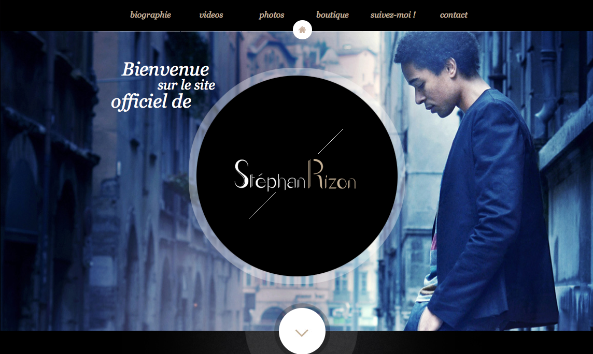
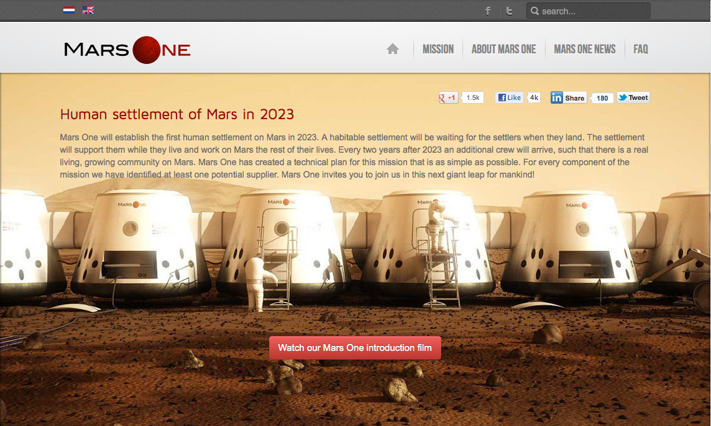
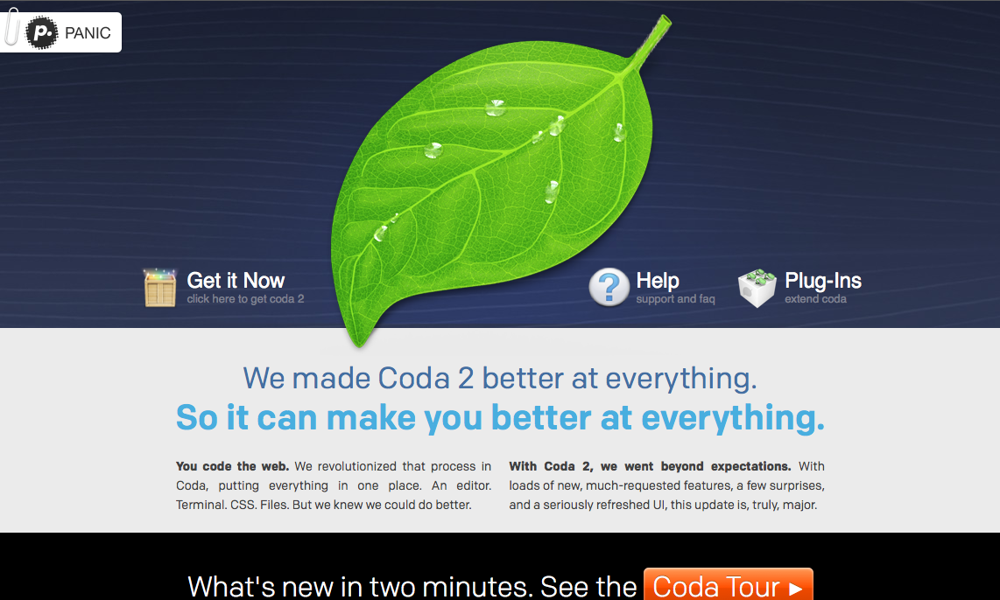
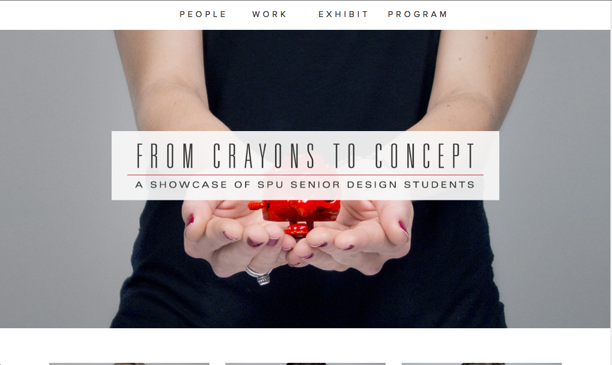

This is the personal website of Stephan Rizon. It contains its biography, videos, photos, contact information and more.
This is a site that talks about the plan of living in Mars from 2023. It contains their mission, the team, news about mars one and more.
This is the site of a plain text editor used to make websites called Coda. It contains the link to download it, a support link, plug-ins, benefits of the new Coda, and more.
This is a showcase site of the SPU senior design students. It contains images of the students, a link to their works, a link to their exhibition information and their program.
